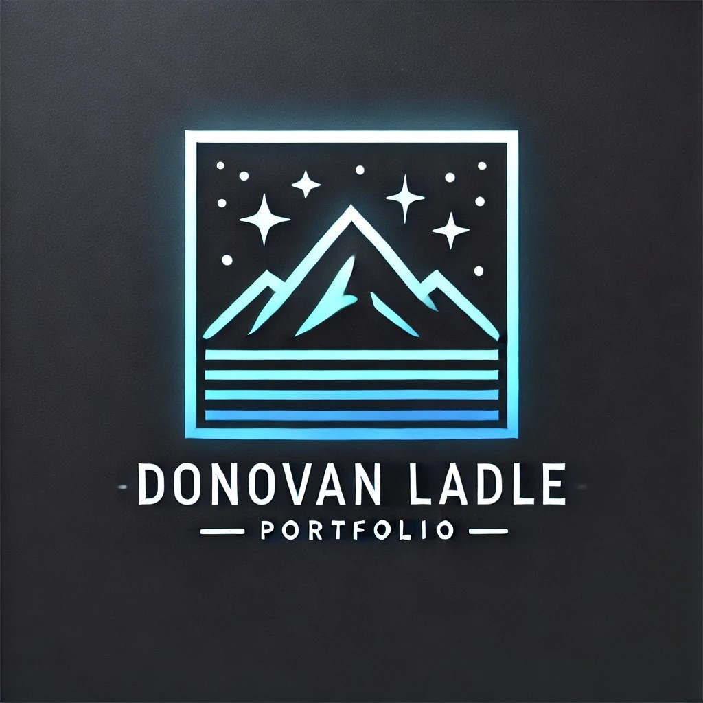

Overview
Purpose
To build a portfolio/resume for future employers to know who I am
Audience
Future employers
Branding
Website Logo
Style Guide
Color Palette primary-Deep Evergreen (#1b3a2b) Secondary- Soft Moss (#a7c4a0) Accent - sky mist blue (#5f9ea0) Accent - Warm sand (#ede7d9) text - charcoal gray (#2e2e2e)
| Primary | Secondary | Accent 1 | Accent 2 |
|---|---|---|---|
Typography
Heading Font: [Font Name here]
Paragraph Font: [Font Name here]
Normal paragraph example
Purpose of the Website
My intention is that this website will be mainly for employers. I want this website to be a site in which I can upload my projects, resume, and also allow visitors to get to know me better. I am thinking of possibly making a QR code that links to this website so that when I go to job fairs, companies would have a quick and easy way to view my resume.
How Employers Will Benefit
I am hoping that my website will help employers understand what skills and certifications I have. I hope to be able to assure any concerns they have by showcasing my projects. I also want them to know who I am as an individual and that I am a person who is easy to work with. My goal is for them to be excited to meet me in person by the time they are done reviewing my website.
Functionality of the Website & Why Employers Will Visit
There won’t be many interactive activities. For the most part, the website will act more as a digital brochure or pamphlet rather than an interactive platform. Employers will visit my site because it provides a more personalized and comprehensive view of my professional profile than a standard resume or LinkedIn page could offer. My website will showcase not only my technical skills through featured projects but also convey my personality and work ethic through my design choices and content organization. Unlike generic job platforms where my profile might get lost among thousands of others, my personal website gives me complete control over how I present myself and my accomplishments. It demonstrates initiative and technical ability simply by existing, which already sets me apart from candidates who rely solely on traditional application methods.
Measuring Success
I want to be able to measure the success of my website. The biggest way will be if it helps me secure interview opportunities and, ultimately, a job. I also plan to gather feedback from recruiters or hiring managers who visit my site to gain insights into its effectiveness. Additionally, I will regularly seek reviews from professors, friends, and others who can provide constructive feedback. I want to make sure my website meets the expectations and standards of employers in my field.
Strategies for Success
To make my website work as an asset for my future career, I will take several practical approaches. I want to create a clean and easy-to-navigate design that looks professional but still represents me. I will organize content logically, ensuring that employers can quickly find the most important information. When showcasing my projects, I will keep the descriptions straightforward—highlighting the problem I solved, the tools I used, and what I accomplished. This will demonstrate both my technical skills and my approach to problem-solving. I will ensure that my website functions well on both phones and computers, as this is something employers will notice. If possible, I’d like to include testimonials from professors or peers who have worked with me, giving employers a better understanding of who I am. To increase visibility, I’ll share my website link on my resume, email signature, LinkedIn, and through QR codes at job fairs.
Keeping the Website Updated
The most important thing is to keep my website up to date. As I complete new projects or learn new skills, I will add them to show how I am growing. This website isn't just about looking good—it’s about proving to employers that I am reliable and committed to professional development. I hope my website will provide a clearer picture of who I am and what I can bring to their team beyond just a resume.
Navigation
Site Map
Content
Home page
About Me!
Images for the Home page
[Page 2]
My Resume & Experience
Images for the Page 2
[Page 3]
My Work & Projects
Images for the Page 3
Wireframes
Create three wireframes for your site. One for each page and list them here
Home
[Any additional details about home that the wireframe does not make clear]
Projects
[Any additional details about page 2 that the wireframe does not make clear]
[Resume]
[Any additional details about page 3 that the wireframe does not make clear]